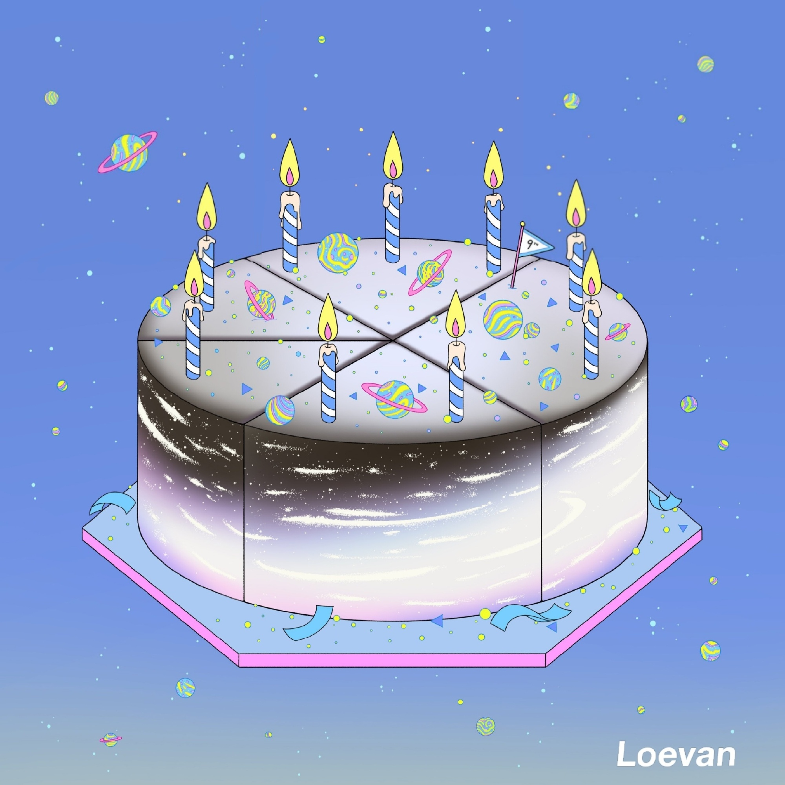

Home
Kpop Idol
About Future
Contact me
Welcome
to my little world
I will show you something
I like;
More
“每个人的心里都有一个小小宇宙”
这里是我的小世界
“每个人都有自己的小世界，只是我的小世界好像很不一样。看得到太阳吗？我想飞到星星那里。”
“我们一起跑到月亮那里再停下吧”“小熊你要雨衣吗？”
“现实的世界或好或坏，我们大都无法左右，每个人在自己的小小世界里栖息，寻找治愈的魔法”

“追星，让我可以放松放松！”
有很多人觉得，追星就是疯狂和无脑的代名词。但在我看来，追星不仅仅是放松也给我力量。
看到自己的偶像在舞台上努力发光时，我会告诉自己也要不断变得优秀。
我并不觉得唱歌跳舞就是“不务正业”，他或许是与传统的大众所认可的成长方式不同。但是在我看来，努力生活的人，永远值得被尊重与喜爱。
My Homtown
“这里是我的家乡，我来自云南”
那里有我最最最最爱的家人们
家永远都会是我们的依靠，在那里你永远可以保持真实。他们不会因为你身上是否有光环而爱你
他们爱你的原因只是因为你是你自己。我想回家，想永远永远陪在他们身边，但是好难好难